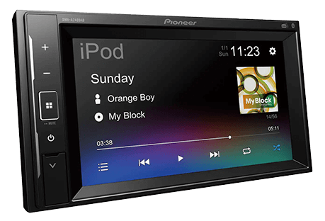

Nyheter fra Sony


XAV-AX3005DB
Et fullverdig 2-DIN apparat, men på baksiden finner man at alt er kompakt konstruert i et 1-DIN chassis. Dette gjør at man mye lettere får plass til alle ledninger og adapter som kreves i mange biler.
Les mer


DMH-A240DAB
2-DIN 6,2-tommers Clear Type berøringsskjerm og multimediespiller med enkel smarttelefontilkoblingsmulighet via en enkel USB-kabel som støtter DAB/DAB+ Digital Radio, Bluetooth og en 13-bånds GEQ
Les mer